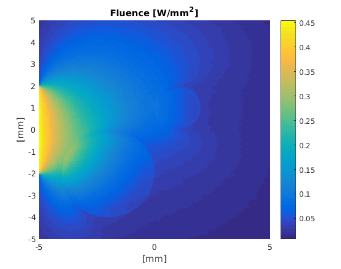

Generating input for the external executable: generatingc.m
Calculations with complex geometries are convenient to perform using the external executable that is compiled from C++ code (see installation instructions). This example shows how the initial conditions can be set up using Matlab and stored to a text file for a parallelized calculation on a computer cluster, for example. The code is identical to the Netgen example, but the computation is done using the external executable.
For this example to work the external executables must be compiled. See the homepage/installation for instructions how to compile the external executales
Contents
clear all;
Perform simulation initialization as in the Netgen example
Import the NetGen file Netgen meshes can be imported using 'importNetGenMesh'. In addition to the mesh structure, it returns the regions in the vol file as cell arrays. Each row in these arrays contains a vector that holds the indices of a region (in the medium or in the boundary). Netgen files may also contain names for the regions. These are returned in 'region_names' and 'boundary_names' and can be used to find the correct indices for each region (see 'Set optical parameters and light sources').
[vmcmesh regions region_names boundaries vmcboundary_names] = importNetGenMesh('square_with_two_circles.vol'); % Set optical parameters and light sources % The return values can be used to assign optical coefficients, % lightsources and other conditions. indices_for_background = cell2mat(regions(1)); indices_for_circles = cell2mat(regions(2)); indices_for_outer_boundary = [cell2mat(boundaries(2)); cell2mat(boundaries(1))]; vmcmesh.BH = vmcmesh.BH(indices_for_outer_boundary,:); indices_for_lightsource=1:size(cell2mat(boundaries(2)),1); % In Matlab 2016b and later it is possible to find indices using % % indices_for_lightsource = cell2mat(boundaries(find(contains(boundary_names,'lightsource')))); % indices_for_circles = cell2mat(regions(find(contains(region_names,'circles')))); % % i.e. strings can be used to extract regions. vmcmedium.absorption_coefficient(indices_for_background) = 0.01; % absorption coefficient [1/mm] vmcmedium.scattering_coefficient(indices_for_background) = 1.3; % scattering coefficient [1/mm] vmcmedium.scattering_anisotropy(indices_for_background) = 0.9; % scattering anisotropy parameter [unitless] vmcmedium.refractive_index(indices_for_background) = 1.3; % refractive index [unitless] vmcmedium.absorption_coefficient(indices_for_circles) = 0.09; vmcmedium.scattering_coefficient(indices_for_circles) = 1.3; vmcmedium.scattering_anisotropy(indices_for_circles) = 0.5; vmcmedium.refractive_index(indices_for_circles) = 1.5; vmcboundary.lightsource(indices_for_lightsource) = {'cosinic'}; % cosine directed light profile vmcoptions.photon_count = 2e6; % set the desired photon count
Save the Monte Carlo simulation input
% Export the input file 'netgen_test_input.txt' exportValoMC('netgen_test_input.txt',vmcmesh, vmcmedium, vmcboundary, vmcoptions);
Run the external executable
The input file is used to launch an external executable using the ! operator in Matlab. Note that the calculation could be done on a computing cluster aswell and no Matlab is needed.
% This assumes the c++ code has been compiled. % In Windows, MC2D.a should be replaced with MC2D.exe !./MC2D.a netgen_test_input.txt netgen_test_output.txt
-----ValoMC-2D-----
---Version v1.0b --
---Revision 282---
--OpenMP version --
-------------------
Using 32 threads
Loading problem netgen_test_input.txt
Loaded:
H (21855 x 3)
BH (405 x 2)
r (11131 x 2)
BCType (405)
BCn (405)
BCLNormal (405 x 2)
mua (21855)
mus (21855)
g (21855)
n (21855)
Constants:
f (0.000000e+00)
phase0 (0.000000e+00)
Initializing MC2D
Computing...
0.800000 % 2.200000 % 3.700000 % 6.450000 % 9.200000 % 11.600000 % 13.450000 % 16.050000 % 18.800000 % 20.200000 % 21.950000 % 23.750000 % 25.150000 % 26.600000 % 28.100000 % 29.500000 % 31.050000 % 32.500000 % 33.900000 % 36.150000 % 38.150000 % 40.050000 % 42.550000 % 44.500000 % 45.900000 % 48.750000 % 50.100000 % 52.700000 % 54.300000 % 55.750000 % 57.350000 % 58.800000 % 60.250000 % 61.550000 % 63.200000 % 64.700000 % 66.250000 % 67.650000 % 69.350000 % 70.950000 % 72.500000 % 74.050000 % 75.650000 % 77.200000 % 78.750000 % 80.350000 % 81.750000 % 83.350000 % 85.150000 % 87.350000 % 89.050000 % 91.100000 % 92.400000 % 93.500000 % 94.400000 % 95.150000 % 95.800000 % 96.300000 % 96.850000 % 97.300000 % 97.650000 % 98.000000 % 100.000000 %Saving problem netgen_test_output.txt
Computation took 6 seconds
Load the simulation output using importValoMC
importValoMC can be used to retrieve the problem definition and the simulation output from the external executable
[vmcmesh, vmcmedium, vmcboundary, options, solution] = importValoMC('netgen_test_input.txt', 'netgen_test_output.txt'); % Plot the solution hold on; patch('Faces',vmcmesh.H,'Vertices',vmcmesh.r,'FaceVertexCData', solution.element_fluence, 'FaceColor', 'flat', 'EdgeColor', 'none'); xlabel('[mm]'); ylabel('[mm]'); c = colorbar; title('Fluence [W/mm^2]'); hold off